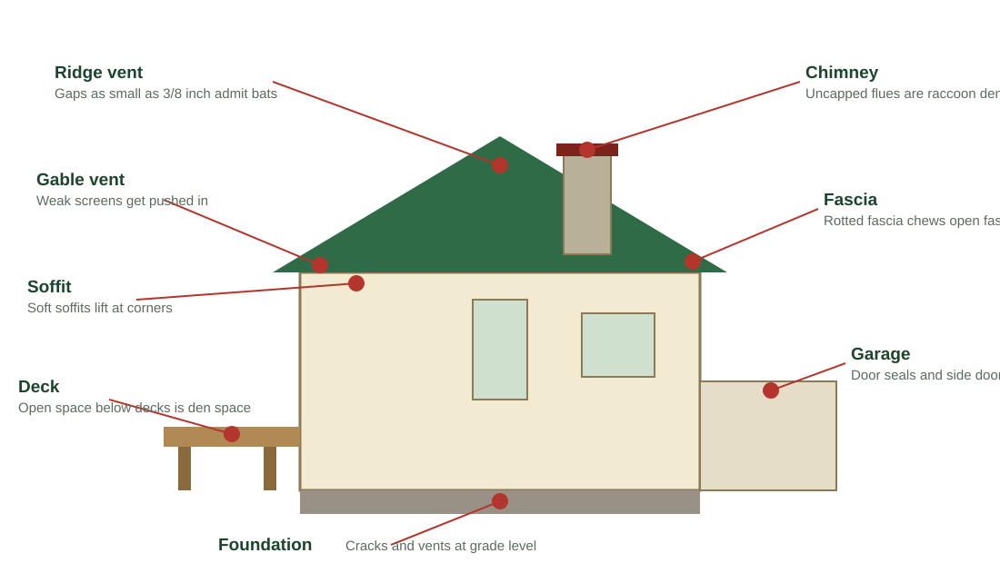

1. Call and triage
Describe the problem. Emergencies are flagged, routine work is booked for inspection, and the inspection range is confirmed.
Process and pricing
No surprises is a process, not a promise. This page lays out the whole sequence: what happens after you call, what the inspection produces, how removal and exclusion run, and what goes wrong when steps are skipped or swapped.
Request an inspection

After you call or send the form, the first job is triage: species if known, where the noise or signs are, whether young may be present, and whether anything makes it an emergency, a bat in a bedroom, an animal in living space, a smell of burning near wiring. Emergencies jump the queue. Everything else is booked as the next inspection in your town. You are told the inspection range, $150-$300, and whether it is credited toward work, before anyone sets off.
The inspection itself runs outside-in. Roofline, soffits, vents, chimney, fascia and foundation first, with photographs of every gap and rub mark. Then the attic: droppings, paths, latrines, chewed wiring, insulation damage and signs of young. Then the conversation, with the photographs on a phone in front of you: what is up there, how it got in, what removal looks like for that species in this season, what exclusion will fit, and what cleanup the contamination needs. The written quote follows from that conversation, itemised by stage.
Removal is humane and species-specific. One-way doors do most attic work: fitted over the entry, monitored over several nights, with the mother-and-babies protocol running whenever young are present. Bats are excluded only outside the blackout windows. Ground-level animals under decks leave by doors too, verified empty before barriers are dug. Trapping is used where doors cannot work, lawfully and checked daily. Nothing is sealed while an animal remains inside; that rule has no exceptions for weather, weekends or a homeowner in a hurry.
Exclusion follows confirmed removal. Each mapped point is sealed with its named material, quarter-inch hardware cloth, flashing, caps and guards, and photographed after fitting. Weak points the animal was not yet using are sealed in the same pass, because the map, not the animal, decides the list. Stage four ends with an inside check for daylight at sealed points and a walk of the whole line with you where access allows.
Cleanup and the follow-up close the job. Contaminated zones are removed or treated as mapped, insulation is restored where it was lost, and the paperwork lands in one file: inspection photos, materials list, cleanup note and warranty terms. A follow-up check, a call or a visit after the first quiet weeks, confirms the attic has stayed silent and the seals have held through weather. That file is yours, for insurers, buyers and your own memory in three winters' time.
Skipped steps have a price list of their own. Skip the inspection and the quote is a guess that grows. Skip removal checks and an animal is sealed in, the worst outcome on this page. Skip exclusion and the next tenant arrives within a season, scent-led, to a proven den. Skip cleanup and odour, contamination and the advertisement to other animals all remain. The process is five stages because each one protects the money spent on the others.
| Stage | What happens | What you receive |
|---|---|---|
| 1. Call and triage | Problem sorted, emergencies flagged | Inspection booked, range confirmed |
| 2. Inspection | Roofline and attic checked | Photographs and written findings |
| 3. Humane removal | One-way doors or lawful trapping, babies protocol | Notes on species and young |
| 4. Exclusion | Every mapped point sealed in metal | Materials list and after photos |
| 5. Cleanup and follow-up | Zones cleaned, insulation restored, seals rechecked | Cleanup note and warranty terms |
Describe the problem. Emergencies are flagged, routine work is booked for inspection, and the inspection range is confirmed.
The operator checks the roofline, attic and ground-level entries, photographs findings and checks for young.
You receive an itemised quote: removal, exclusion, cleanup and warranty terms, before booking the work.
One-way doors or lawful trapping clear the animals, with the mother-and-babies protocol in season.
Each mapped entry is closed with metal materials and photographed after fitting.
Contaminated zones are treated or restored, paperwork is handed over, and a follow-up confirms the result holds.
First, triage: a short set of questions sorts an emergency from a routine inspection and identifies the likely species and season issues, like young in the attic or the bat blackout. Then an inspection visit is booked and its range confirmed, $150-$300 here. At the visit you get photographs, findings and a written, itemised quote. Work starts only after you accept it. Nothing about that sequence should be a surprise, and any firm that rushes past it is worth slowing down. An inspection in one of the ten upstate towns we cover confirms the details before any work or price is agreed in writing.
The inspection is one visit. Removal runs over several nights in most cases, because one-way doors work on the animals' schedule, and a raccoon family or a bat colony in season has its own calendar. Exclusion usually fits in a day once the structure is confirmed empty, and cleanup adds from part of a day upward by zone. A straightforward squirrel job can close inside a week. A spring raccoon family takes longer, and it should. If you are unsure, start with an inspection and written findings, then decide on the next step with clear information in hand.
No. Sealing with an animal inside is the one move this process forbids outright. The animal will chew a new exit through a ceiling, wall or wiring, or die inside and leave an odour and cleanup problem worse than the original noise. Use a one-way door, or wait for monitored silence and an operator's confirmation. The few days of patience are the cheapest insurance in the whole job. That approach keeps the work humane, avoids sealing an animal inside, and gives you a record of exactly what was done.
Because sealing is only safe on an empty structure, and only useful once you know every point the animals use or could use. The inspection maps the points, removal empties the structure through the main point, and sealing then closes the full list, including the quiet gaps no animal has tried yet. Swap the order and you get trapped animals now and new tenants later. Keep it, and one job closes the problem at every stage. An inspection in one of the ten upstate towns we cover confirms the details before any work or price is agreed in writing.
A roofline walk covering soffits, ridge and gable vents, chimney and flashing, fascia and foundation, then an attic check for droppings, paths, latrines, wiring and insulation damage and signs of young, then ground-level points at decks, porches and garages. Findings are photographed as they are found. You receive the photographs with the written findings and the itemised quote, so the evidence and the price arrive together and can be judged together. If you are unsure, start with an inspection and written findings, then decide on the next step with clear information in hand.
Yes. The quote follows the inspection and itemises removal, exclusion and cleanup separately, with the warranty terms for sealed points. That structure lets you compare a second quote fairly, stage by stage, and it protects you from the pattern where a low headline price grows on the ladder. If anything in the quote is a range rather than a figure, it should say why, usually contamination measured at cleanup, and what would move it. That approach keeps the work humane, avoids sealing an animal inside, and gives you a record of exactly what was done.
They should, before and after. Before photographs prove the gap existed and show you a place you cannot safely inspect yourself. After photographs prove the material fitted and its quality, mesh gauge, fixings and coverage. This service treats photographs as part of the deliverable, not a favour. Keep them with the quote and warranty in your house file, where they serve you at insurance time, sale time and the next inspection, whoever does it. An inspection in one of the ten upstate towns we cover confirms the details before any work or price is agreed in writing.
Work stops at that point and the job steps back to removal for that section. It happens: a quiet animal in a soffit, a second species behind the first. The point stays open or gets a one-way door, the animal is given its route out, and sealing resumes once the structure checks empty again. A process with a rule for surprises handles them calmly. A process without one cuts corners at exactly the moment corners matter. If you are unsure, start with an inspection and written findings, then decide on the next step with clear information in hand.
Yes. The follow-up confirms quiet: no new noise at the old hours, no new droppings, seals intact after weather. It sits inside the warranty frame for sealed points, which is written in your paperwork with its period and remedy. If activity does return, the follow-up evidence, dates, photos, times, tells the operator whether it is a sealed point failing, which the warranty covers, or a new point elsewhere, which is new work honestly described. That approach keeps the work humane, avoids sealing an animal inside, and gives you a record of exactly what was done.
A single mouse at a known point, occasionally. Almost nothing else, honestly. One-way doors need nights to work, bat work follows the calendar, and sealing before confirmed removal is forbidden by the process itself. A firm promising every job done in a day is promising to skip the stages that make the result hold. The visit count is the method working, not inefficiency, and the quote should lay the expected visits out in advance. An inspection in one of the ten upstate towns we cover confirms the details before any work or price is agreed in writing.
Little, and that is deliberate. Keep pets away from the attic hatch and the roofline side of the house during the visit. Note the times and places of any noise in the days before, and photograph any droppings visible from the hatch if you can do it safely. Do not block any hole you have spotted, and do not spray anything into the attic. Your notes and an untouched scene give the inspector the cleanest possible read of the problem. If you are unsure, start with an inspection and written findings, then decide on the next step with clear information in hand.
You can buy it, and this page exists partly to talk you out of it. Removal alone rents you a quiet attic for a few weeks or months, priced at $300-$600 for a single animal, and leaves the entry, the scent and the droppings that advertise the den to the next animal. If budget forces a choice, stage the work: removal now, exclusion booked next, cleanup after. Sequenced stages still beat a single stage repeated every year. That approach keeps the work humane, avoids sealing an animal inside, and gives you a record of exactly what was done.
Tell us the town, the animal or noise involved, and when it started. An operator covering your town will explain the inspection, the likely next steps and the typical ranges before any work is booked.
Placeholder: call-tracking phone number and form endpoint are added before launch. No phone number is shown or invented in this draft.